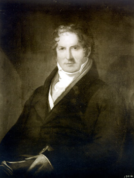
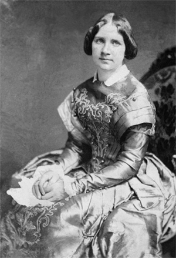

|
American classical music developed rapidly in the antebellum era. Throughout the
period, musical culture was influenced heavily by the steady influx of
European-trained immigrant musicians, who played vital roles creating and
sustaining the nation's first musical institutions. Without the aristocratic
patronage found in European cities and courts, these musicians often worked
concurrently as performers, composers, and publishers. And, as audiences
developed greater interest in classical music--especially opera--performing as a
virtuosic soloist became extremely profitable. This led to the establishment of
several prominent musical institutions still in existence, most notably the New
York Philharmonic, and also encouraged the development of American composers. By
1861, Americans had produced works in every major genre of classical music:
operas, symphonies, choral pieces, chamber music, and music for soloists.
The institutions regularly associated with classical music--symphony
|

Benjamin Carr, one of America's first successful composers.
|
orchestras and opera companies--were virtually non-existent in the young American
nation. Musicians instead worked predominantly in theaters, churches, sacred
singing schools, and publishing houses. As multipurpose hubs of entertainment,
religion, and printing, these musical venues were central fixtures in urban
centers and outlying towns. The variety of musical activities allowed the
average citizen of a moderately sized city to attend performances on several
nights each week during the busiest seasons.
A night at the theater typically included music and drama. The most popular
type of musical theater was the ballad opera, an English genre featuring songs
interspersed with spoken dialogue. The texts of these comic plays frequently
addressed social issues or lampooned Italian opera, which was considered
entertainment for royalty and aristocrats. In addition, before the main event,
theater orchestras often performed short pieces called overtures. This
integrated popular tunes with the songs appearing later in the show. The
Federal Overture (1794) by Benjamin Carr, an English composer who settled in
Philadelphia, is a noteworthy example of this hodgepodge genre.
Another popular form of musical performance was the concert. Generally, the
musicians themselves would make arrangements for these performances, even going
so far as to sell tickets themselves. Programs for benefit concerts included
both symphonies by established European composers and new works written by local
composers. In addition, musicians often performed songs chosen by the audience,
especially the patriotic tunes "Yankee Doodle" and "Hail, Columbia." The variety
and popularly-oriented nature of these shows speak to the musicians' need to
appeal to the widest possible demographic in order to maintain their livelihood.
Most towns and cities had theaters, music during religious services, and
concerts. Larger cities might also have private concert societies supported by
wealthy donors. Between 1790 and 1800, New York City boasted at least seven
societies devoted to disseminating the best choral music, though none survived
beyond 1816. Gottlieb Graupner, a German-born performer and publisher, founded
and directed Boston's Philo-harmonic Society between 1809 and 1824. Charleston's
St. Cecilia Society, founded in 1766, thrived for over 50 years. Even cities as
far west as Lexington and Cincinnati hosted short-lived concert societies before
1815.
Boston and Philadelphia were the first cities to support long-standing
concert societies devoted exclusively to classical music. Boston's Handel and
Haydn Society, founded in 1815, was established to promote the oratorios--large

A program from the Boston Handel and Haydn Society's
1860 performance of Handel's The Messiah.
|
sacred choral works--of George Frideric Handel and Joseph Haydn, two highly
esteemed Europeans. Incorporated in 1820, Philadelphia's Musical Fund Society
was the first successful organization to offer regular orchestral concerts. Both
societies are still in operation today.
As the United States developed forums for musical performance, a number of
composers achieved prominence. One of the earliest, William Selby, was a London
organist who moved to Boston and composed choral works. English composers
Benjamin Carr, Raynor Taylor, and Alexander Reinagle were all active in
Philadelphia and composed prolifically for the theater and the concert stage.
James Hewitt, also English-born, directed theaters in Boston and New York, and
wrote works focusing on patriotic subjects like the Battle of Bunker Hill and
the Fourth of July. William Billings, a native Bostonian and a singing school
master, wrote sacred and patriotic choral works that were among the earliest
examples of a distinctly American style of composition.
Once concert societies had gained a foothold in American cities, vying with
one another for the wealthiest patrons and the best musicians, star performers
began to dominate the musical landscape. The most talented musicians were able
to reap generous profits from dazzled audiences. Increased demand for Italian
and French opera nourished this star system, and enterprising managers stuffed
touring troupes with the most popular divas. As European music became more
fashionable and more easily accessible, American composers had to compete
fiercely with popular Europeans for a place on concert programs. The tension
arising from this competition continued well beyond the Civil War.
Concert programs after 1820 generally resembled those from before, but the
increased importation of European music allowed for much greater variety.
Ensembles produced difficult orchestral works by Ludwig van Beethoven, Wolfgang
Amadeus Mozart, Ludwig Spohr, and Felix Mendelssohn much more frequently, though
popular music still appeared alongside classical masterworks. Some of these
popular pieces were based on American themes, such as "Panorama of Broadway, New
York" (1849) by Carl Lenschow, conductor of the itinerant Germania Orchestra.
That said, some musicians found more time for popular music than others. For
example, Leopold Meignen, who conducted Philadelphia's Musical Fund Society in
the 1840s, felt that orchestral concerts should be primarily classical in
nature. New orchestras such as Boston's Academy of Music (1833), the New York
Philharmonic Society (1842), and the St. Louis Philharmonic Society (1860)
tended to follow this approach.
While concerts grew in size and popularity during the antebellum era, it was
opera that became the nation's most fashionable musical entertainment. New
Orleans hosted one of the first successful opera houses, the Theatre d'Orleans,
which opened in 1815. Touring troupes from the city popularized opera along the
east coast during the 1820s, which paved the way for European troupes that sang
in Italian, French, or English and earned stunning profits. Many operatic
composers enjoyed sizable followings in the United States--especially Italian
composers Vincenzo Bellini and Gioachino Rossini--while the most popular opera
singers became national celebrities. The Swedish soprano Jenny Lind, for
example, was in such demand that she hired famed showman P.T. Barnum as her
|

Opera singer Jenny Lind, who conducted a wildly
successful tour of the United States.
|
manager. Wealthy donors sponsored the building of New York City's Astor Place
Opera House (1847) and Philadelphia's Academy of Music (1857) to help opera
occupy a permanent space in those cities.
Celebrity status was not limited to singers, however. Austrian pianists Henri
Herz and Sigismund Thalberg performed in hundreds of cities and traveled as far
west as San Francisco. The Norwegian violinist Ole Bull transfixed audiences at
every concert. Louis-Antoine Jullien, a sensational French conductor, led a
virtuosic orchestra in performances of European masterworks and extravagant
popular pieces such as his own "Fireman's Quadrille" (1854), which featured New
York City firemen extinguishing a real fire. Louis Moreau Gottschalk, a pianist
and composer from New Orleans, was the first American instrumentalist to earn
the admiration of audiences both at home and abroad.
American composition--often focusing on distinctly American themes and
subjects--surged after 1820. Gottschalk composed dozens of piano pieces, a
handful of songs, and two symphonies. Anthony Philip Heinrich, an Austrian
emigre, wrote over twelve symphonies. Some of these focus on American subjects:
Native American rituals, Niagara Falls, and the bald eagle among them. George
Frederick Bristow, a New Yorker, composed symphonies, sacred choral works, and
operas, the latter including Rip Van Winkle (1855), based on the
Washington Irving story of the same name. The theater conductor Robert Stoepel,
a German immigrant, composed a chorale based on Henry Wadsworth Longfellow's
most famous poem, The Song of Hiawatha. William Henry Fry, a composer
and journalist from Philadelphia, was the first American to compose a
large-scale opera--Leonora (1845). He also wrote several symphonies,
notably the Niagara Symphony, which utilizes snare drums and timpani to recreate
the sound of water splashing on rocks.
By the start of the Civil War, then, American classical music was well
established. The venues that opened their doors in the antebellum years served
as a foundation for classical performances into the twentieth century. At the
same time, American audiences developed a taste for opera, concerts, and musical
theater that remained strong after the war. While the careers of composers like
Louis Moreau Gottschalk and William Henry Fry came to their inevitable ends in
the 1860s, a distinguished group of American-born composers--Amy Beach, Edward
MacDowell, John Knowles Paine, George Whitefield Chadwick, and Horatio Parker
were prepared to take their place in the postbellum years.
Source: Christopher Bates, ed. The Encyclopedia of the Early
Republic and Antebellum America (Armonk, NY: M.E. Sharpe, 2010), 687-690.
|